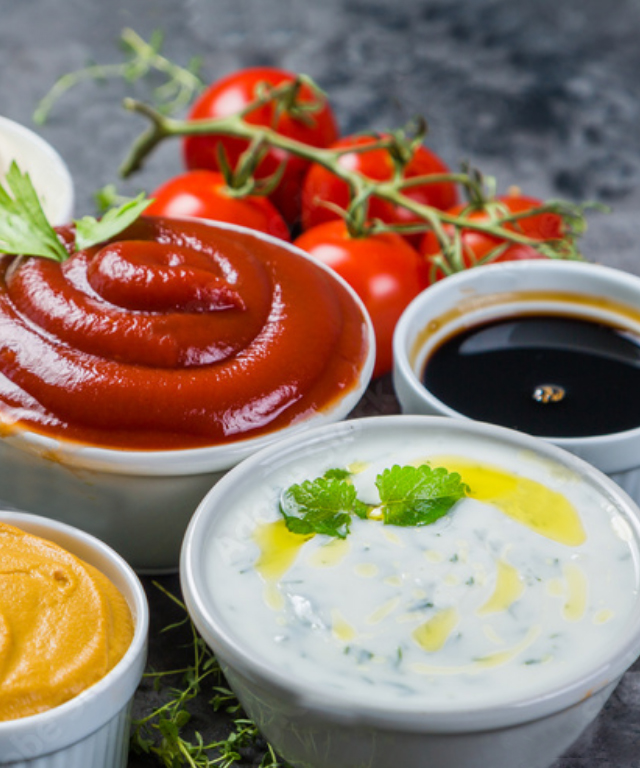

Barbecue Sauce
- 1 tbsp olive oil
- 1 onion, finely chopped
- 400g can chopped tomatoes
- 3 garlic cloves, finely chopped
- 85g brown sugar
- 3 tbsp malt vinegar
- 2 tbsp Worcestershire sauce
- 1 tbsp tomato puré
Ingredients
- Heat oil in a saucepan and add the onion. Cook over a gentle
- Heat 4-5 mins, until softened. Add the remaining ingredients,
- Season and mix. Bring to the boil, then reduce heat and
- Dimmer for 20-30 mins, until thickened. For a smooth sauce,
- Dimply whizz the mixture in a food processor or with a hand
- Blender for a few seconds.
MethodSteps
Courtesy of BBC Good Food Guide